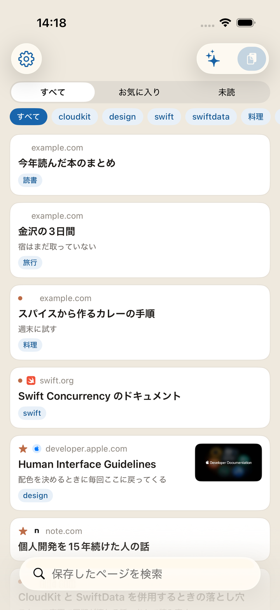
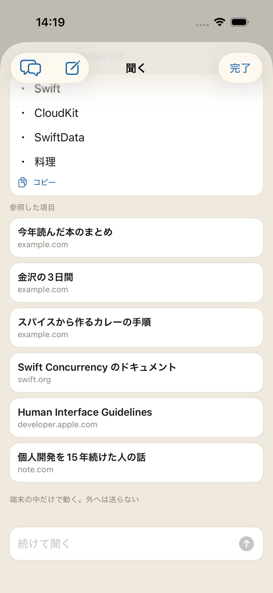
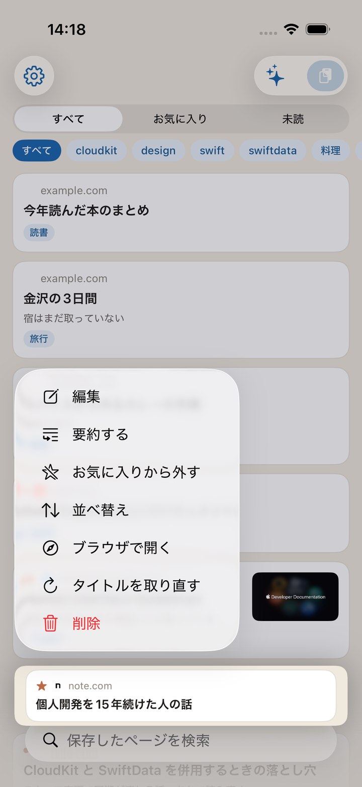
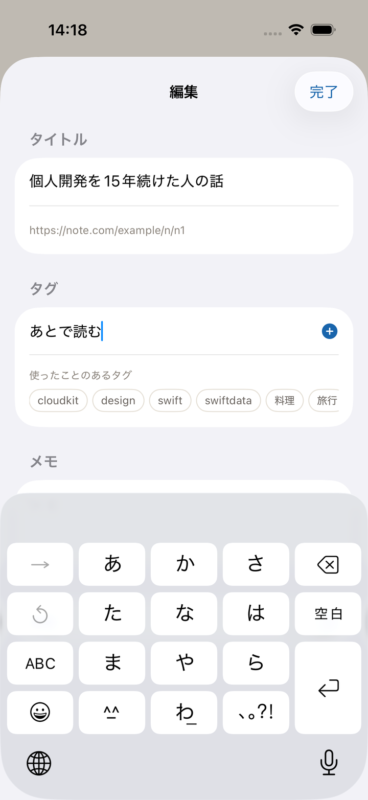
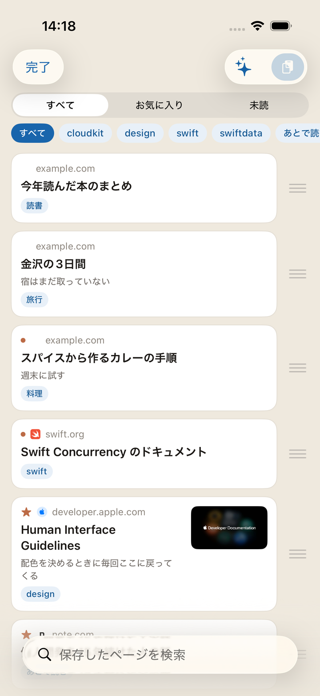
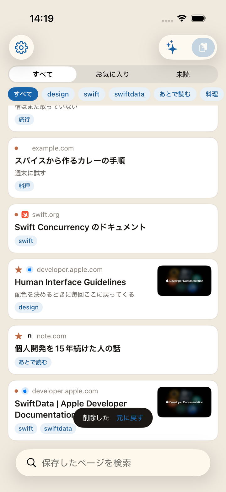
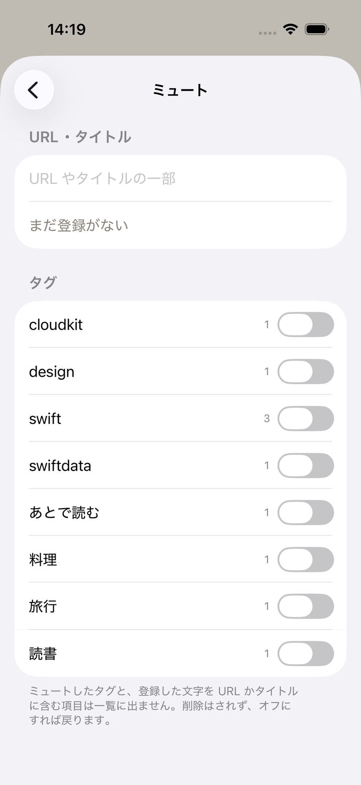
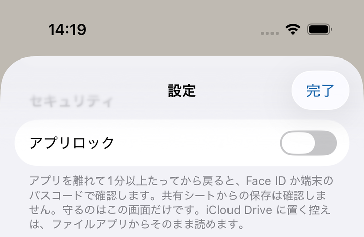

Il y a deux entrées. Dans les deux cas, l'enregistrement est fini au moment où vous touchez.
Ouvrez une page dans Safari ou ailleurs, touchez le bouton de partage et choisissez Kakesu. S'il n'y figure pas, activez Kakesu depuis « Plus » dans la feuille de partage.
Au moment où vous l'avez choisi, c'est enregistré. L'écran qui suit vous laisse ajouter étiquettes et note sur-le-champ, mais vous pouvez le fermer sans rien mettre et compléter plus tard dans l'écran de modification. En cas de fausse manœuvre, « Annuler » en haut à gauche retire uniquement l'élément qui vient d'être créé.
Avec une URL dans le presse-papiers, ouvrez l'app et touchez le bouton coller en haut à droite.
Les titres et les vignettes se remplissent tout seuls, après. Juste après l'enregistrement il n'y a que des URL ; l'app va les chercher une à une tant qu'elle est ouverte. Enregistrer là où la réception est mauvaise ne fait pas échouer l'enregistrement lui-même.
Enregistrer deux fois la même page n'en ajoute pas une deuxième
(les paramètres de suivi comme ?utm_source= et un www. de différence sont ignorés).
Les non-lus portent un point, les favoris une étoile.
C'est le texte de la page qui est cherché, pas seulement le titre. Après l'enregistrement, le début du texte est conservé à côté du titre. Un mot dont vous vous souvenez dans le corps déterre donc la page là où le titre n'y suffirait pas.
Le bouton en forme d'étincelles, en haut à droite de la liste, vous laisse demander en langage courant. Demandez « Comment ça marche ? », « Qu'est-ce que j'ai gardé dernièrement ? » ou « Où s'accumulent mes non-lus ? » : les éléments consultés figurent sous la réponse, prêts à s'ouvrir.
Tout se passe sur votre appareil. Ni la question ni la réponse ne sortent. Ce qui est remis au modèle, c'est une poignée d'éléments proches de la question — titre, étiquettes, note, nom du site — plus des décomptes et vos étiquettes les plus utilisées. Les URL complètes ne sont jamais remises.
Vous pouvez relancer. Une relance comme « Je l'ai gardé quand ? » est comprise à la lumière de ce qui précède. Pour changer de sujet, touchez « Nouvelle conversation » en haut à gauche : tout ce qui précède est effacé. La conversation n'est stockée nulle part ; fermer l'écran l'efface aussi.
« Copier », sous la réponse, la reprend telle quelle. Demandez où se trouve ce site et la réponse arrive sous forme de lien à toucher. Seul ce site devient jamais un lien à toucher. Les URL des pages que vous avez gardées ne sont jamais écrites dans une réponse.
Le bouton n'apparaît que sur les appareils compatibles avec Apple Intelligence (iOS 26 ou ultérieur), et à condition que ce soit activé dans les réglages d'iOS. Ailleurs, il n'y a pas de bouton du tout.
Maintenez le doigt sur un article et choisissez « Résumé » : il est là dès l'ouverture. Ce n'est pas un écran de lecture. C'est un écran pour décider si vous lisez maintenant.
De là, vous pouvez continuer à interroger cet article. Les réponses reposent sur le seul texte de cette page ; rien d'autre de votre collection n'y entre. Une page dont le texte n'a pas pu être récupéré ne peut pas être résumée, et le dit.
Les cinq conversations d'articles les plus récentes restent sur votre appareil, pour que vous repreniez où vous en étiez en rouvrant le même article. Elles ne vont pas sur iCloud, et elles ne suivent pas vers un nouvel appareil.
Celles qui restent se trouvent en haut à gauche de l'écran Demander (la bulle de dialogue). Supprimez-les une à une, ou d'un coup avec « Tout supprimer » en haut à droite. Depuis l'écran du résumé, la corbeille en haut à gauche supprime la seule conversation de cet article.
Comme « Demander », cela n'apparaît dans le menu que sur les appareils compatibles avec Apple Intelligence (iOS 26 ou ultérieur).


La page s'ouvre dans l'app. En fermant, vous revenez au même endroit de la liste. L'ouverture vaut lecture.
N'affiche que le texte, sans publicité ni superflu. C'est activé par défaut. Pour voir les pages telles quelles, désactivez Réglages → Affichage → « Ouvrir en mode Lecteur ». Les pages non compatibles s'ouvrent normalement de toute façon.
La taille du texte et la couleur du fond se changent dans le lecteur lui-même.
Les pages qui demandent une connexion, ou une extension, partent d'ici vers Safari.

Appui long → Modifier pour changer le titre, les étiquettes, la note et l'état non-lu.
Le tri, c'est appui long → Trier → faire glisser du doigt. Impossible pendant un filtrage ou une recherche (déplacer une partie de ce qui est visible casserait l'ordre de l'ensemble).
Pour un élément dont le titre n'est jamais arrivé, appui long → Récupérer à nouveau renvoie l'app le chercher.
Réglages → Masquer liste vos étiquettes avec leur décompte. Balayez une ligne d'étiquette vers la gauche pour renommer et supprimer. Les deux agissent sur tous les éléments à la fois.
Supprimer une étiquette ne supprime pas les signets. Elle leur est seulement retirée. Quand les étiquettes se multiplient, la recherche du même écran les filtre.


Balayez vers la gauche, ou appui long → Supprimer. « Annuler » apparaît quelques secondes juste après. Touchez-le et l'élément revient. Laissez-le passer et c'est alors seulement qu'il disparaît.
Réglages → Masquer. Enregistrez une chaîne présente dans l'URL ou le titre et tout ce qui correspond quitte la liste. Des étiquettes entières se masquent aussi. Dans les deux cas, la règle demeure et s'active ou se désactive.
Le nombre d'éléments masqués est affiché sous la liste. Une pression ouvre les réglages, où « Masquer » vous attend.


Une fois par semaine, tout ce que vous avez gardé est écrit en JSON dans le dossier Kakesu d'iCloud Drive. Vous l'ouvrez depuis l'app Fichiers, et il reste après la suppression de l'app.
Les huit dernières sauvegardes sont conservées ; les plus anciennes s'effacent.
Réglages → Données propose à tout moment l'export (la destination, c'est vous qui la choisissez) et l'import. L'import ignore les URL déjà présentes et n'ajoute que ce qui manque. Il n'écrase jamais. Le même écran indique la date de la dernière sauvegarde automatique.
Une URL enregistrée, c'est votre historique, tout simplement. Si votre téléphone passe entre d'autres mains, activez Réglages → Verrouillage de l'app. L'ouverture demande alors Face ID / Touch ID, ou le code de l'appareil.
Le verrou ne couvre que les écrans de l'app. La copie JSON déposée dans iCloud Drive reste lisible depuis l'app Fichiers. Pour masquer aussi la copie, gérez-la du côté de Fichiers.
Sans code défini sur l'appareil, la fonction est inutilisable (le réglage devient intouchable).
Le verrouillage ne s'applique jamais à l'enregistrement depuis la feuille de partage. Une demande avant l'enregistrement ferait perdre les pages mêmes que vous vouliez y jeter.

« À propos » dans les réglages ouvre les conditions d'utilisation et la politique de confidentialité. La version de l'app est au même endroit — merci de l'indiquer quand vous écrivez.
Posez le widget sur l'écran d'accueil et il montre combien il en reste de non-lus. La petite taille cite un titre récent, la moyenne jusqu'à trois. Une pression ouvre l'app.
Tant que le verrouillage est actif, seul le nombre s'affiche. Ni titres ni noms de sites dans le widget. L'écran d'accueil est à la vue de tous, sans verrou devant.
Tant que l'appareil est verrouillé, la recherche ne répond pas. Rien ne justifie de livrer ce que vous avez enregistré à un appareil non déverrouillé. L'enregistrement, lui, fonctionne même verrouillé. Pouvoir y jeter quelque chose est tout l'intérêt : celui-là n'est pas arrêté.
Choisissez Kakesu sous « Apps » dans l'app Raccourcis. Ils fonctionnent aussi dans les automatisations.
Tant que vous êtes connecté au même compte Apple, c'est simplement là. Aucun compte à créer. Pour arrêter la synchronisation, désactivez Kakesu dans Réglages iOS → compte Apple → iCloud.
Pour tout ce qui n'est pas écrit ici, la page de contact est la voie.